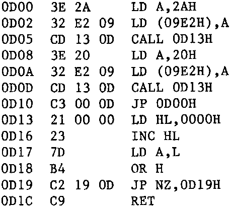

INMC 80 News |
February–April 1981 · Issue 3 |
| Page 37 of 55 |
|---|
Well that just about wrapped up the program, all that was required was to put a ‘call’ to the subroutine in the right places, and it would be away. The finished program looked like this:
Success. A whole week of evenings, but I’d got there. The program wasn’t very clever, but it was a program, and whats more it worked. I saved it on tape, and also wrote down exactly how it worked, so I wouldn’t make the same mistakes again. I suppose in all, that took about 20 hours to write, about 5 minutes to do the right things, and 19 hours and 55 minutes of mistakes. Perhaps I could stave off the lynching party with my impressive demonstration of a blinking asterisk. So ends the story of my first program.
There are a number of points to be drawn from this long (and in many ways cautionary tale). First understand what the machine code instructions do. In many cases it is useful to write a simple little test program just to test the effects of certain instructions. Single stepping often reveals things going on (or not going on) that give insights into how the instructions work. The technical manuals often tell you explicitly what an instruction will do, but quite often neglect to tell you the side effects. This is particularly important when it comes to determining which instructions affect the flag register and in what ways. Often flags change (or don’t change) for, at first sight, inexplicable reasons, and it’s often up to you to figure out why. Another thing is always have a clear idea of what it is you are about. Drawing a flow chart is supposed to be useful. I personally rarely use them, but instead write down little lists of the things that should happen in a column. I don’t worry about actual machine instructions at that stage, but the list ‘flows’ in a linear fashion rather like a program, and I find it easy to translate into instructions later. So my scribbled notes look a bit like this:
J3 Get the 2nd space recieved flag
test if 1st space flag is still set
if not set it again
set 3rd space flag
and go to J1
J4 test this char for space or char
is control char?
yes, go to J6
is space?
yes goto J3
and so on. In case you are wondering what that is, it’s part of a proportional print routine I still haven’t got to work properly (and I’ve been at it on and off for two months). Slowly, I’ve introduced assembly listings, in case you haven’t noticed, thats what those lists of machine code instructions are called. Without a program called an ‘assembler’ using them is still tedious, as they have to be written down by hand, but the compensation is that by using the correct mnemonics, programs become much more readable, and so easier to understand. The preceding story taught me two things, patience, and a determination not to be beaten by a mere machine. The Nascom got its revenge on me also, after those first few hours, I became addicted. The thought that there is an electronic machine that I (even now) do not completely understand is
| Page 37 of 55 |
|---|